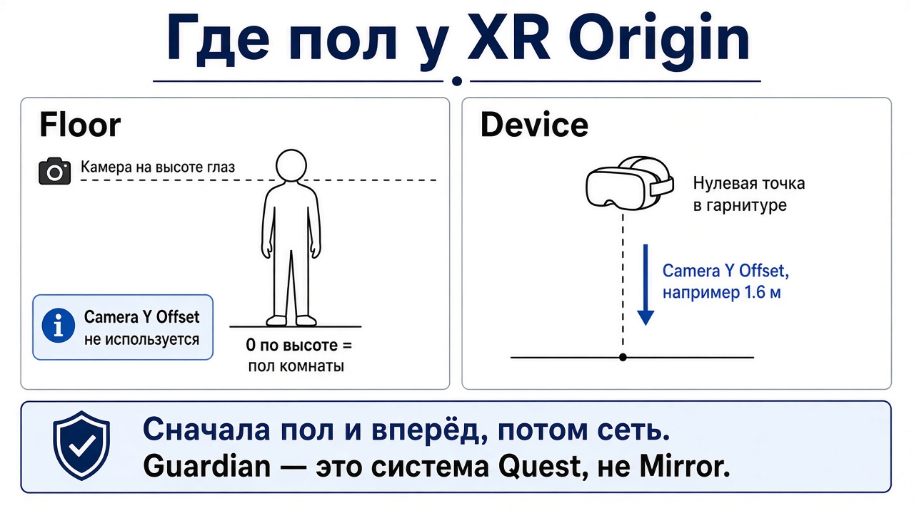
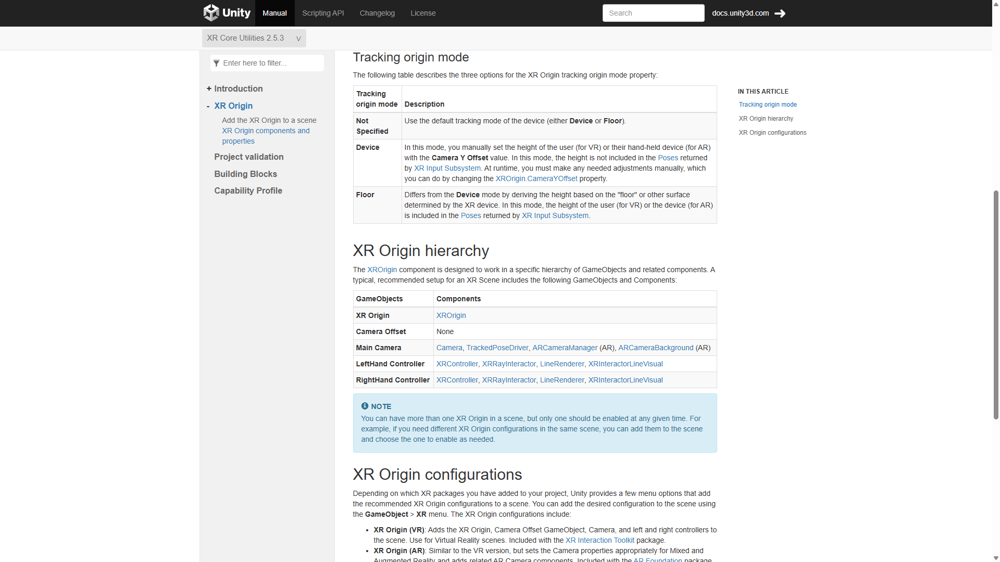

Тетрадь 4 · твой ПК
Пол и направление «вперёд» настраиваются на шлеме до Host и Connect. Кривой пол сеть не чинит.
Ниже восемь вопросов. Под каждым сразу написан ответ.
Ответ
Шлем сообщает Unity, где голова и контроллеры. Калибровка — договор: где в этой позе пол, куда «вперёд» и где стоит игровая комната.
XROrigin задаёт корень игрока: пол, камеру, рост.
Recenter заново назначает, куда смотрит «вперёд». Сел боком к парте — аватар смотрит в стену. Это не поломка Mirror.
Guardian — граница физической комнаты в системе Quest. Unity её не синхронизирует и не заменяет коллайдером. Вышел из границы — шлем показывает passthrough. К порту 7777 это не относится. Пункт в меню шлема называется по-разному на разных прошивках: ищи границу комнаты в системных настройках Quest.


Ответ
Шлем не знает, где в твоей сцене стол. Он знает пол комнаты и голову над этим полом. XROrigin переводит это в координаты сцены. Пока переводчик врёт, рука промахивается мимо куба, хотя захват настроен верно.
В режиме Device компонент ставит высоту Camera Floor Offset из Camera Y Offset и сбрасывает её при recenter. В режиме Floor эта высота — ноль.
Origin в сцену добавляется так: GameObject → XR → XR Origin (VR). Это не пустой куб с камерой. Если в сцене уже была Main Camera, вторую с тем же тегом удали. Две камеры — прыжок картинки.
В сцене может лежать несколько Origin, включён ровно один. В сети включённая камера живёт только у твоего игрока. Чужой риг выключен. Заготовка PlayerXRSetup гасит XR у сервера и у чужих и включает его в OnStartLocalPlayer. Иначе картинка прыгает на чужую голову, и это похоже на «улетела калибровка».
Куда сервер поставил аватар в игре — не то же самое, что пол класса у соседа. У каждого свой Guardian.
Ответ
TryRecenter). Дублировать его твином камеры не надо.Ответ
Ответ
Update.Ответ
| Что происходит | Где искать |
|---|---|
| Руки есть, пола нет, всё на уровне глаз | Device без Y Offset, или пол сбит в системе шлема |
| После приседания мир уезжает | двигается сам XROrigin |
| Картинка прыгает в чужую голову | второй включённый Origin или вторая камера |
| Смотришь в стену, аватар тоже | не сделал recenter после того, как сел боком |
| Серая сетка или passthrough | вышел из Guardian. Это не KCP |
| На ПК масштаб нормальный, в шлеме гигантский | у окна хоста нет XR. Смотри билд Android, не Play на ПК |
| До предметов не дотянуться | стол в сцене не на высоте реального пола |
Ответ
Ответ